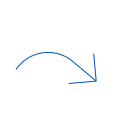
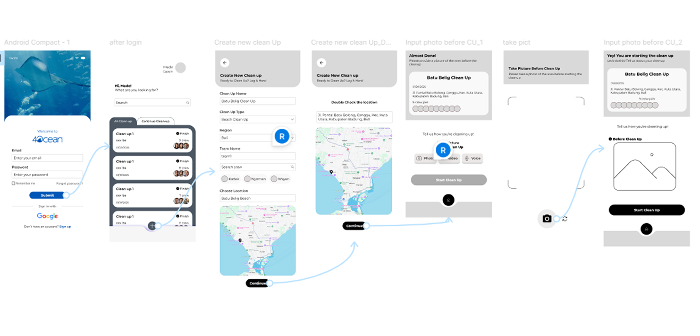
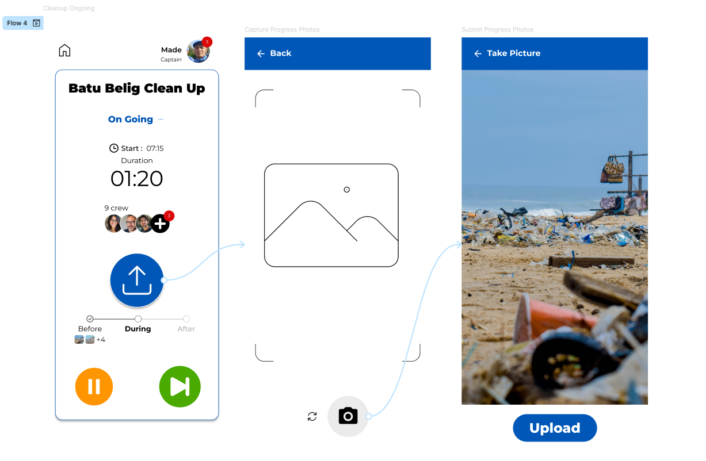
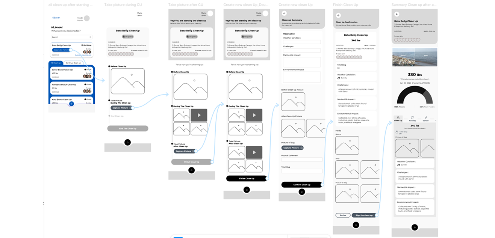
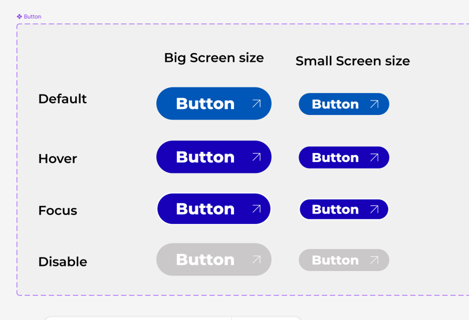
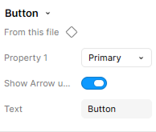
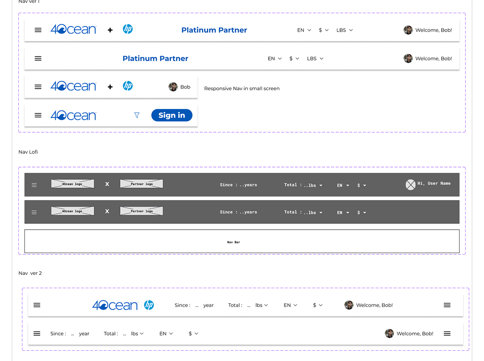
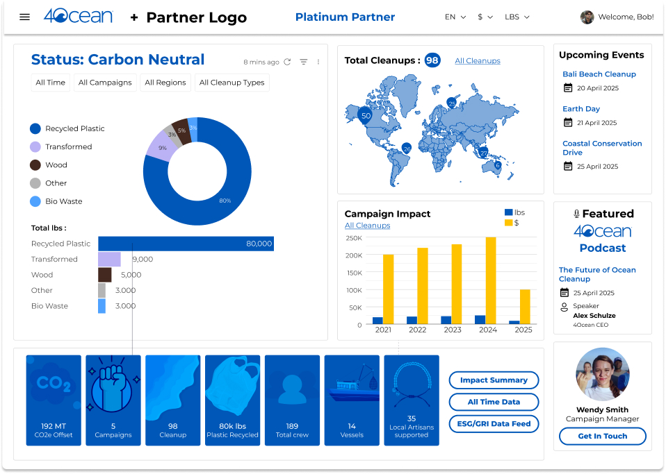
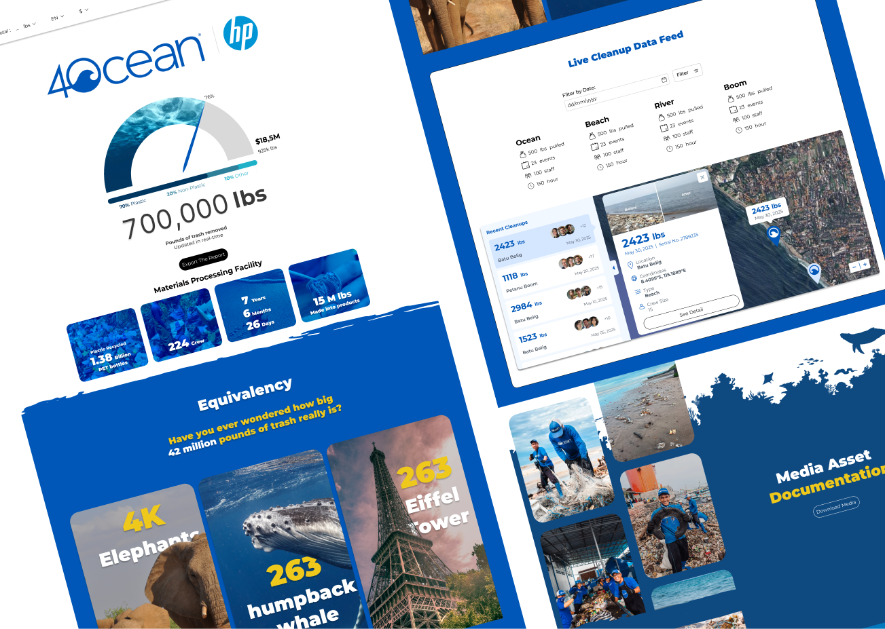
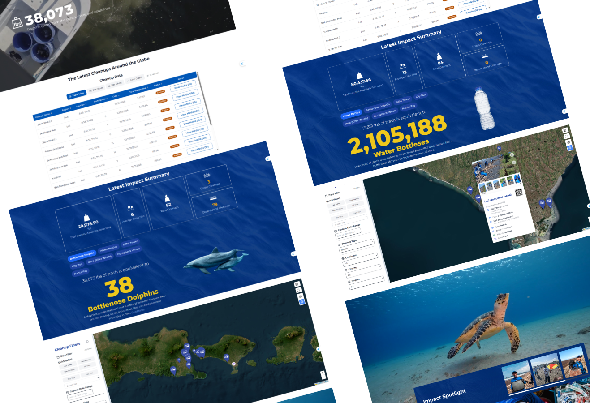

Project Scope
4ocean is a mission-driven organization operating at the intersection of environmental impact and global commerce. As the organization scaled, its digital platform struggled to keep up with growing operational and communication needs.
The existing setup was built incrementally over time, resulting in fragmented user journeys, limited flexibility, and increasing maintenance overhead. While the mission remained strong, the digital experience no longer reflected the scale, clarity, and credibility of the organization.
Duration
6 Months
Timeline:
Phase 1:
Planning & Discovery
Phase 2:
Requirement Analysis
Phase 3:
UI Design
Phase 4:
Development & Testing
General Process Discovery
Cleanup Team
Responsibility : Collect and record daily waste collection data in the field.
Cleanup teams conduct waste collection activities across assigned locations, including
collecting waste in the field, transporting it to the facility, sorting and categorizing the
collected materials, and weighing each category of waste.
This process allows the team to separate mixed waste and produce clean, measurable data
based on the type and weight of the materials collected.
All activity data, including the cleanup location, collection activities, waste categories,
and final weights, is manually recorded in paper logbooks during or after the cleanup
process.
The completed logbooks are then submitted to the Team Captain for reporting and further
processing.

4Ocean Admin
Responsibility : Get data from Cleanup Team, monitor, validate, and report operational performance data.
After receiving the paper logbooks and reports from the field teams, 4ocean Admin manually
reviews, compiles, and recaps the data from multiple cleanup activities and
locations.
The information is then organized and processed for operational monitoring, reporting, and
impact tracking, with the entire workflow still relying on manual, paper-based documentation
rather than a centralized digital system.
Then the admin will send the report manually and personally

Investors
Responsibility : Track environmental impact and operational transparency.
Investors rely on impact and operational reports provided by 4ocean, typically in PDF
format, to review environmental performance and assess the organization's measurable
impact.
They use these reports to understand the results of cleanup operations, track progress over
time, and evaluate whether the organization's reported impact is supported by transparent
and reliable data.
Problem
Non-Standardized Field Data Collection
Cleanup teams need a standardized and efficient way to record and submit cleanup data because paper-based logbooks make data collection inconsistent, difficult to manage, and prone to delays when multiple teams conduct cleanup activities simultaneously across different locations.
Manual Data Consolidation
4ocean Admins need a more efficient and centralized way to collect, review, and consolidate cleanup data because manually processing paper logbooks from multiple teams and locations is time-consuming, difficult to standardize, and can result in delayed or scattered information.
Limited Real-Time Transparency
Investors need more transparent and accessible visibility into 4ocean's environmental impact and operational performance because relying on static PDF reports limits their ability to track measurable impact, understand ongoing activities, and access up-to-date information about how impact is being created.
Solution
How might we help cleanup teams collect and submit standardized field data more efficiently across multiple cleanup locations?

A Digital Collection Application (DCA) for field data entry
How might we enable 4ocean Admins to automatically centralize and synchronize cleanup data from multiple teams and locations?
A centralized database for automated synchronization
How might we provide 4ocean stakeholders with real-time visibility into cleanup operations and environmental impact data?
A real-time operational dashboard for monitoring and analytics
How might we give investors secure and transparent access to real-time environmental impact and operational data while ensuring access is limited to their own relevant data?
Role-based access control for Team, Admin, and Investors
User Flow & Lo-fi Wireframing
Stakeholder :
Clean up team
Start Clean up Flow:
Login → View Cleanup List → Create New Cleanup → Select Crew →Double Check → Take Pre-Cleanup
Photo
→
Start Cleanup

During Clean up Flow:
Start Cleanup → Cleanup Ongoing → Capture Progress Photos

After Clean up Flow:
Capture Post-Cleanup Photo → Enter Daily Cleanup Data → Review → Submit Finish Clean up

Waste Sorting Flow:
Capture Post-Cleanup Photo → Enter Daily Cleanup Data → Review → Submit Finish Clean up

Dashboard / Report Flow:
note : this is dummy data
Donors / 4Ocean Management Login → Report Ready

Hi-Fi Wireframing
Color
Figma Variable Color Collection

Tailwind CSS
:root {
--secondary: #1700b7;
--primary: #0057b7;
--white-neutral: #ffffff;
--orange-accent: #eb7600;
--green-accent: #5fef1c;
--text: #171717;
--disable: #cac8c8;
}
@theme {
--color-secondary: var(--secondary);
--color-primary: var(--primary);
--color-white-neutral: var(--white-neutral);
--color-orange-accent: var(--orange-accent);
--color-green-accent: var(--green-accent);
--color-text: var(--text);
--color-disable: var(--disable);
}
Logo
Typography
Figma Text Style

Responsive Dashboard Typography (Tailwind Variable)
Display 96px / Black
Hero Text | Responsive ( in Tailwind Class) : small
screen text-4xl , medium to big screen md:text-8xl
Heading 1 / Bold
H1 tag | Responsive ( in Tailwind Class) : small screen text-2xl ,
medium to big screen md:text-5xl
Heading 2 / Bold
H2 tag | Responsive ( in Tailwind Class) : small screen text-xl ,
medium to big screen md:text-3xl
Heading 3 / Bold
H3 tag | Responsive ( in Tailwind Class) : small screen text-lg ,
medium to big screen md:text-2xl
Body
Paragraph | Responsive ( in Tailwind Class) : small to big screen
text-lg
Label Regular
Button Text | Responsive ( in Tailwind Class) : small to
big screen text-base
Small Text
Note / Additional text | Responsive ( in Tailwind Class) : small
to big screen text-sm
Icon


Component


Responsive

Iterasi
First Version

Second Version

Final Version

Key Learnings
Apa obstacle yang kamu temui.
mengatasinya.
Apa yang kamu lakukan untuk
Insight atau skill yang kamu dapatkan.